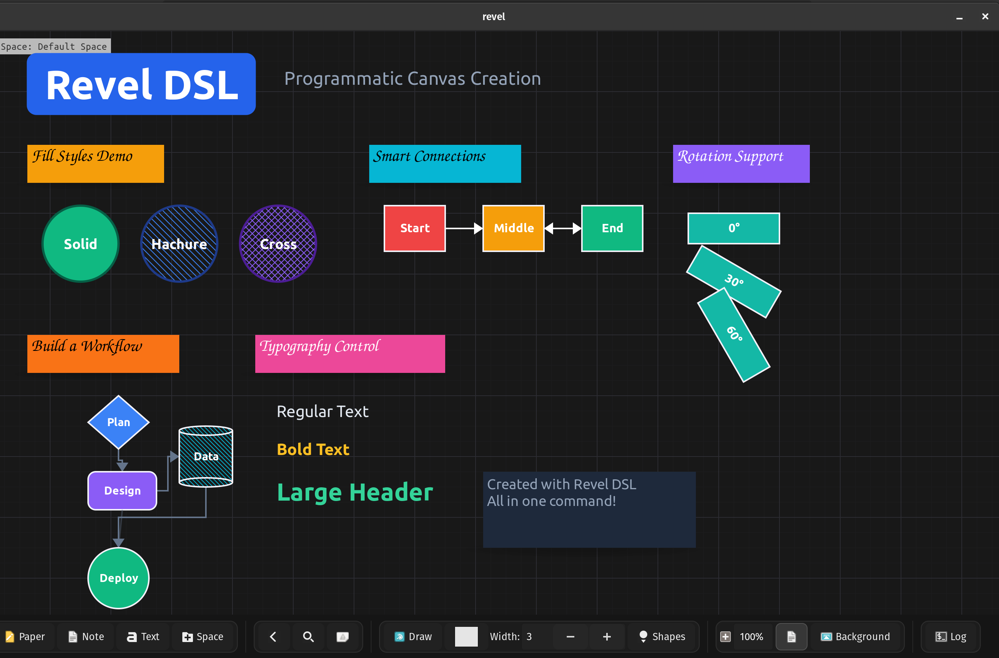
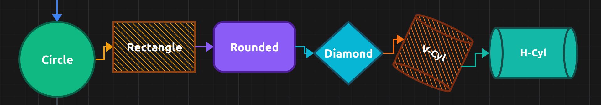
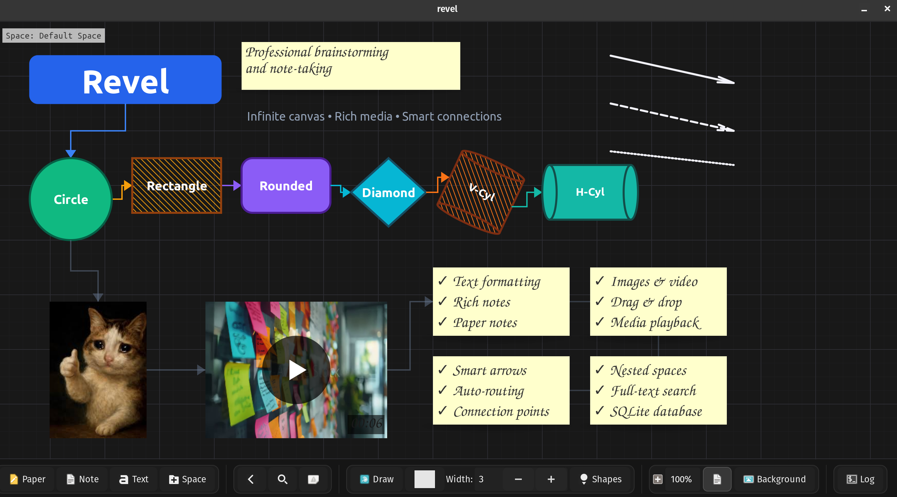

In my previous post, I introduced Revel - an infinite canvas note-taking app written in C. Since then, I’ve been using it daily and adding features that make it genuinely productive. Today I want to share what makes Revel unique: its Domain Specific Language (DSL) and several powerful features I haven’t seen together in other tools.
Building Revel took about one month of coding, and honestly, it was one of the most fun projects I’ve ever worked on in C. There’s something deeply satisfying about writing systems-level code that directly manipulates pixels, manages memory, and produces instant visual feedback. No framework overhead, no build step hell - just pure C, GTK4, and SQLite3.
One feature I’m particularly proud of is Revel’s DSL (Domain Specific Language). It lets you programmatically create entire canvas layouts with a simple text script. Think of it as “Infrastructure as Code” but for visual brainstorming.
Here’s a taste of what the DSL looks like:
canvas_background (0.15,0.15,0.18,1.0) true (0.25,0.25,0.30,0.5)
note_create title "My Project" (50,50) (280,70) bg #2563eb text_color #FFFFFF font "Ubuntu Bold 36"
shape_create s1 circle "Design" (50,200) (120,120) bg #10b981 stroke 3 filled true text_color #FFFFFF
shape_create s2 rectangle "Build" (200,200) (130,80) bg #f59e0b stroke 3 filled true fill_style solid text_color #000000
shape_create s3 diamond "Deploy" (360,200) (110,100) bg #8b5cf6 stroke 3 filled true rotation 15 text_color #FFFFFF
connect s1 s2 parallel single #3b82f6
connect s2 s3 parallel double #f59e0b
image_create screenshot examples/demo.jpg (50,350) (300,200)
video_create demo examples/video.mp4 (400,350) (320,200)Why is this useful?
I’ve created a demo DSL file that showcases various features. You can run it yourself:
make -B -j 7 && ./revel --dsl examples/blog_dsl_demo.dsl
The implementation is straightforward C: a simple parser that tokenizes the DSL commands and calls the same internal functions the GUI uses. No external parser generators, no complex AST - just string manipulation and direct API calls. This is the beauty of C: you can build powerful features without pulling in heavyweight dependencies.
Revel supports multiple element types including shapes (circle, rectangle, rounded rectangle, diamond, vertical cylinder, horizontal cylinder, arrow, line, triangle), text elements, notes, paper notes, spaces, images, and videos.
What makes these elements special:
solid, hachure (hand-drawn hatching), or crosshatch fills. This gives your diagrams a sketch-like aesthetic that feels less sterile than typical diagramming tools.rotation 45 to the DSL command.
Here’s an example creating a rotated cylinder with hachure fill:
shape_create cyl vcylinder "Database" (100,100) (120,150) bg #f97316 stroke 3 stroke_color #7c2d12 filled true fill_style hachure text_color #FFFFFF font "Ubuntu Bold 16" rotation 25Connecting elements visually is crucial for brainstorming and system design. Revel’s arrow system supports:
connect element1 element2 parallel single #3b82f6
connect element2 element3 straight double #f59e0b
connect element3 element4 straight none #64748b60The parallel arrow algorithm creates clean perpendicular connections that make your diagrams look polished without manual adjustment. Revel automatically determines optimal connection points by calculating the nearest points between elements - as you move elements around, connections dynamically update to use the best anchor points (top, bottom, left, or right).
Revel treats media as first-class citizens. You can:
image_create photo examples/media/cat.jpeg (50,400) (200,200)
video_create clip examples/media/demo.mp4 (300,400) (320,200)This is where Revel diverges from traditional note-taking apps. Instead of linking to external files that might move or get deleted, everything lives inside one portable .db file. Your entire knowledge base - text, images, videos, canvas layouts - is a single file you can backup, version, or sync however you want.
This is a concept I haven’t seen in other tools. Revel distinguishes between:
Fork - Creates an independent copy. Change the copy, and the original stays unchanged.
Clone - Creates a linked copy. Clones can share specific properties:
For example, let’s say you’re designing a UI mockup with multiple buttons that should always have the same dimensions. Clone them by size, and resizing one automatically resizes all linked clones. Change the text independently, but the size stays synchronized.
This is implemented in C using a reference system in SQLite. Each element can reference a unique property ID that’s shared between cloned visual elements. The UI listens for model changes and updates all elements that should be synchronized.
Spaces are both containers and elements. This means:
Want to organize a project? Create a top-level space called “Website Redesign”, then create sub-spaces for “Research”, “Wireframes”, “Assets”, etc. Each sub-space is its own infinite canvas.
The implementation allows even weirder things:
This flexibility comes from treating spaces as graph nodes rather than a strict tree hierarchy. It’s stored in SQLite with simple parent_id references, letting you build whatever structure makes sense for your workflow.
With all this content, you need a way to find things. Revel uses SQLite’s FTS5 extension with BM25 ranking. This is the same algorithm used by search engines.
Press Ctrl+S and start typing. Revel searches:
Results are ranked by relevance, and you can jump directly to any element, even if it’s nested deep in another space.
The BM25 implementation is essentially free - SQLite does all the heavy lifting. In C, it’s just a matter of executing the right SQL query:
SELECT ets.element_uuid, ets.text_content, ets.space_uuid, s.name
FROM element_text_fts ets
JOIN spaces s ON ets.space_uuid = s.uuid
WHERE ets.text_content MATCH ?
ORDER BY bm25(element_text_fts);I mentioned in my first post that I previously built Velo in Rust. Rust is an amazing language, but I wanted to learn C and GTK4 is an excellent GUI toolkit that works beautifully with C.
With GTK4 in C:
make -j 7 builds the entire project almost instantlyThe entire codebase is over 15,000 lines of C. No build system complexity, no dependency hell, no framework magic.
I built Revel on my lovely ThinkPad laptop running Linux. It should work on Unix systems, though Windows would need some tweaks since it uses GStreamer for video playback.
I’m actively using Revel daily for:
If there’s demand, I could add multiplayer support for collaborative editing. Or I could create specialized space types - imagine a music player space or a Trello-like dashboard space for project management.
The most exciting direction is AI integration. Since Revel has a DSL, I can ask AI to generate complex layouts. I already used AI to create visualizations for the README. But imagine this: you ask “explain species of cats” and an AI model downloads relevant images from the web, creates a diagram showing the hierarchy, loads everything into Revel with proper connections and labels. The DSL makes this kind of automation possible. Isn’t that amazing?
One more thing: I first started using AI agents in the middle of this project, and my experience was mind-blowing. The productivity boost was incredible.
I’m currently looking for a full-time software engineering role where people are solving complex technical challenges. If you know of opportunities - or if your team is building something interesting - please reach out: velo.app1@gmail.com
Building Revel in one month reminded me why I love programming: turning ideas into working software that solves real problems. The fact that it’s written in C, uses rock-solid dependencies (GTK4, SQLite3, GStreamer), and stores everything in a single portable file means this tool will keep working for decades. No dependency rot, no framework obsolescence - just code that does its job.
If you want to try Revel, check out the GitHub repo. Run the showcase DSL to see what it can do:
git clone https://github.com/Dimchikkk/revel
cd revel
make -B -j 7
./revel --dsl examples/showcase.dsl
Thanks for reading! Feel free to reach out with questions or feedback.
Links: